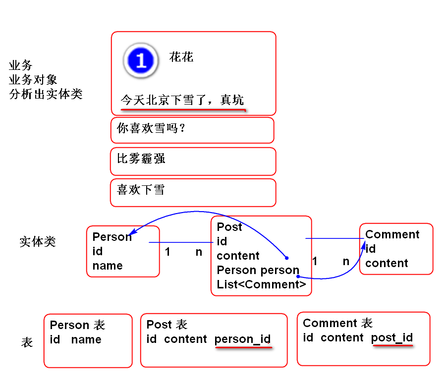

容器类==集合框架==集合
Web容器==Web服务器==Servlet容器=Servet引擎
Tomcat, Jetty ，WebLogic，IBM WebSpare
REQUIRED：如果有事务，则参与到当前事务，如果没有则自动开始新事务，总之，必须有事务。默认最常用规则！！！
propagation=Propagation.REQUIRED
REQUIRES_NEW：必须有新事务，没有事务开启新事务，已经有事务时候，也开启新的独立事务。
propagation=Propagation.REQUIRES_NEW
NEVER：方法永远不参与事务
propagation=Propagation.NEVER
NOT_SUPPORTED：不支持事务, 如果在事务中调用，把当前事务临时挂起，执行以后再继续处理事务。
propagation=Propagation.NOT_SUPPORTED
NESTED：嵌套，当前方法不能单独使用，必须嵌套到其他事务中使用。
propagation=Propagation.NESTED
MANDATORY：不支持事务, 不能再事务中调用，如果调用就出现异常
propagation=Propagation.MANDATORY
反射-> 动态代理 -> AOP -> 声明式事务管理
动态代理：
Spring的AOP动态代理会自动利用 JDK Proxy和CGlib，如果有接口就优先使用JDK Proxy，其他情况下使用CGlib
分页查询，其目的在于在查询结果较多，需要分批向浏览器传输数据。在查询结果多时候经常采用。
实现分页查询：
案例：分页查询笔记本列表
数据层 NotebookDao.java ：
/**
* 分页查询，必须传递参数：
* userId: 用户的ID
* start: 查询起始行号
* rows: 一次查询的最多行数
* @param params 封装参数的Map
* @return List<Map>
*/
List<Map<String, Object>>
findNotebooksByPage(
Map<String, Object> params);
添加SQL NotebookMapper.java:
<select id="findNotebooksByPage"
parameterType="map"
resultType="map">
select
cn_notebook_id as id,
cn_notebook_name as name
from
cn_notebook
where
cn_user_id=#{userId}
<if test="start != null">
limit #{start}, #{rows}
</if>
</select>
测试：
@Test
public void testListNotebooks(){
String userId="ea09d9b1-ede7-4bd8-b43d-a546680df00b";
NotebookService service = ctx.getBean(
"notebookService",
NotebookService.class);
List<Map<String, Object>> list =
service.listNotebooks(userId);
for (Map<String, Object> n : list) {
System.out.println(n);
}
}
添加业务层方法 NotebookService.java:
List<Map<String, Object>>
listNotebooks(String userId,
int pageNum, int pageSize)
throws UserNotFoundException;
实现业务层方法 NotebookServiceImpl.java
@Transactional(readOnly=true)
public List<Map<String, Object>> listNotebooks(
String userId, int pageNum, int pageSize)
throws UserNotFoundException {
if(userId==null||userId.trim().isEmpty()){
throw new UserNotFoundException("ID空");
}
User user = userDao.findUserById(userId);
if(user==null){
throw new UserNotFoundException("木有人");
}
//计算出起始行号
int start = pageNum*pageSize;
Map<String, Object> params=
new HashMap<String, Object>();
params.put("userId", userId);
params.put("start", start);
params.put("rows", pageSize);
return notebookDao.findNotebooksByPage(params);
}
测试 业务层 略...
添加控制器方法 NotebookController.java:
@RequestMapping("notebooks.do")
@ResponseBody
public JsonResult<List<Map<String, Object>>>
notebooks(String userId, int page){
int size=6;
List<Map<String, Object>> list=
notebookService.listNotebooks(
userId, page, size);
return new JsonResult<List<Map<String,Object>>>(list);
}
测试：
http://localhost:8080/note/notebook/notebooks.do?userId=39295a3d-cc9b-42b4-b206-a2e7fab7e77c&page=1
重构页面js代码 edit_notebook.js:
重构 loadNotebooksAction 方法：
function loadNotebooksAction(){
//获取 page 数据
//$(this)是li.more, 显示li时候，已经在LI
//上绑定了页号数据，这里是获取页号数据
//如果不存在这个数居说明是第一次显示
//则显示第0页的内容
var page=$(this).data('page');
if(! page){
page = 0;
}
//console.log('loadNotebooksAction()');
//var url='notebook/list.do';
var url='notebook/notebooks.do';
//var data={userId:getCookie('userId')};
var data={userId:getCookie('userId'),
page:page};
//console.log(data);
//console.log(url);
$.getJSON(url, data, function(result){
if(result.state==SUCCESS){
var list=result.data;
console.log(list);
model.updateNotebooks(list, page);
}
});
}
重构 updateNotebooks 方法：
model.updateNotebooks=function(list, page){
var template='<li class="online notebook">'+
'<a>'+
'<i class="fa fa-book " title="online" rel="tooltip-bottom"></i>'+
'[notebook.name]</a></li>';
//检查如果是第一次获得笔记本列表，就直接
//保存到 模型中，如果是追加显示就将两个
//数组合并为一个笔记本列表
if(! this.notebooks ){
this.notebooks=list;
}else{
//concat 方法用于合并两个数组
this.notebooks=
this.notebooks.concat(list);
}
//console.log(this);
var ul=$('#notebooks').empty();
for(var i=0;i<this.notebooks.length;i++){
var notebook=this.notebooks[i];
// id name
var li=template.replace(
'[notebook.name]', notebook.name);
//在DOM对象上绑定数据 index
li = $(li).data('index',i);
ul.append(li);
}
var li = $('<li class="online more">'+
'<a>More...</a></li>');
//绑定下一页的页号
li.data('page', page+1);
ul.append(li);
};
在笔记本列表最后的位置添加 More... 按钮，在这按钮上绑定下一页的页号
重构事件监听js edit_init.js:
...
//绑定点击笔记本列表的事件
//showNotesAction函数定义在edit_note.js中
$('#notebooks').on(
'click','li.notebook', showNotesAction);
//绑定 More 连接监听
$('#notebooks').on(
'click','li.more', loadNotebooksAction);
...
测试 ...
MyBatis 利用映射文件的XML标签提供了动态SQL拼接功能
可以使用的标签：
<if test="测试条件"></if>
<choose></choose>多路选择
<trim></trim> 处理多余的 and or 等
<set></set> 用于生成set子句 自动去除多余 ,
<where></where> 生成where子句
<foreach></foreach> 迭代常与 in 配合
业务场景： 用多个条件查询笔记
都是可选条件
SQL NoteMapper.xml:
<!-- 多条件查询 -->
<select id="findNoteByParams"
parameterType="map"
resultType="map">
select
cn_note_id as id,
cn_note_title as title
from
cn_note
<where>
<trim prefixOverrides="and">
<if test="userId != null">
cn_user_id=#{userId}
</if>
<if test="notebookId != null">
and cn_notebook_id=#{notebookId}
</if>
<choose>
<when test="title != null">
and cn_note_title like #{title}
</when>
<when test="key !=null">
and cn_note_title like #{key}
</when>
</choose>
<if test="key != null">
or cn_note_body like #{key}
</if>
</trim>
</where>
<if test="start != null">
limit #{start}, #{rows}
</if>
</select>
NoteDao.java:
List<Map<String, Object>> findNoteByParams(
Map<String, Object> params);
测试：
@Test
public void testFindNoteByParams(){
Map<String, Object> params=
new HashMap<String, Object>();
//params.put("userId", "");
//params.put("notebookId", "");
params.put("key", "%1%");
params.put("start", 0);
params.put("rows", 10);
NoteDao dao = ctx.getBean(
"noteDao", NoteDao.class);
List<Map<String, Object>> list =
dao.findNoteByParams(params);
for (Map<String, Object> map : list) {
System.out.println(map);
}
}
批量删除功能：
NoteMapper.xml:
<!-- 批量删除 -->
<!-- idList 是 参数map中的key，其值是list
id 代表 list中每个元素-->
<delete id="deleteNotes"
parameterType="map">
delete from cn_note
where
cn_user_id = #{userId} and
cn_note_id in
<foreach collection="idList"
item="id"
open="(" separator="," close=")">
#{id}
</foreach>
</delete>
NoteDao.java:
void deleteNotes(Map<String, Object> params);
测试：
@Test
public void testDeleteNotes(){
String userId="524f7440-7283-4b2d-8af5-4a67570e892e";
List<String> idList=
new ArrayList<String>();
idList.add("22222222222222222222222222222222222");
idList.add("41712949-4a1a-4e24-944a-9b8ed1001238");
idList.add("60480071-f989-4945-9b1c-0d2aba07ae96");
idList.add("60480071-f989-4945-9b1c-0d2aba07ae96");
Map<String, Object> params =
new HashMap<String, Object>();
params.put("userId", userId);
params.put("idList", idList);
NoteDao dao = ctx.getBean(
"noteDao", NoteDao.class);
dao.deleteNotes(params);
}
案例：

初始化 SQL：
create table p_person(
id int,
name varchar(100),
primary key(id)
);
insert into p_person (id, name)
values (1, '花花');
insert into p_person (id, name)
values (2, 'Jerry');
create table p_comment(
id int,
content varchar(100),
post_id int,
primary key(id)
);
create table p_post(
id int,
content varchar(100),
person_id int,
primary key(id)
);
insert into p_post (id, content, person_id)
values (1, '今天下雪了', 1);
insert into p_post (id, content, person_id)
values (2, '李洪鹤老师呵呵', 1);
insert into p_comment(id, content, post_id)
values (1, '比雾霾好', 1);
insert into p_comment(id, content, post_id)
values (2, '冻成狗', 1);
insert into p_comment(id, content, post_id)
values (3, '喜欢下雪', 1);
实体类：
public class Person implements Serializable{
private static final long serialVersionUID = -296767120996005908L;
private Integer id;
private String name;
public Person() {
}
public Person(Integer id, String name) {
super();
this.id = id;
this.name = name;
}
public Integer getId() {
return id;
}
public void setId(Integer id) {
this.id = id;
}
public String getName() {
return name;
}
public void setName(String name) {
this.name = name;
}
@Override
public int hashCode() {
final int prime = 31;
int result = 1;
result = prime * result + ((id == null) ? 0 : id.hashCode());
return result;
}
@Override
public boolean equals(Object obj) {
if (this == obj)
return true;
if (obj == null)
return false;
if (getClass() != obj.getClass())
return false;
Person other = (Person) obj;
if (id == null) {
if (other.id != null)
return false;
} else if (!id.equals(other.id))
return false;
return true;
}
@Override
public String toString() {
return "Person [id=" + id + ", name=" + name + "]";
}
}
public class Comment implements Serializable{
private static final long serialVersionUID = 9005740179566619541L;
private Integer id;
private String content;
public Comment() {
}
public Comment(Integer id, String content) {
super();
this.id = id;
this.content = content;
}
public Integer getId() {
return id;
}
public void setId(Integer id) {
this.id = id;
}
public String getContent() {
return content;
}
public void setContent(String content) {
this.content = content;
}
@Override
public int hashCode() {
final int prime = 31;
int result = 1;
result = prime * result + ((id == null) ? 0 : id.hashCode());
return result;
}
@Override
public boolean equals(Object obj) {
if (this == obj)
return true;
if (obj == null)
return false;
if (getClass() != obj.getClass())
return false;
Comment other = (Comment) obj;
if (id == null) {
if (other.id != null)
return false;
} else if (!id.equals(other.id))
return false;
return true;
}
@Override
public String toString() {
return "Comment [id=" + id + ", content=" + content + "]";
}
}
public class Post implements Serializable {
private static final long serialVersionUID = -929206547879400506L;
private Integer id;
private String content;
private Person person;
private List<Comment> comments;
public Post() {
}
public Post(Integer id, String content, Person person) {
super();
this.id = id;
this.content = content;
this.person = person;
}
public Integer getId() {
return id;
}
public void setId(Integer id) {
this.id = id;
}
public String getContent() {
return content;
}
public void setContent(String content) {
this.content = content;
}
public Person getPerson() {
return person;
}
public void setPerson(Person person) {
this.person = person;
}
public List<Comment> getComments() {
return comments;
}
public void setComments(List<Comment> comments) {
this.comments = comments;
}
@Override
public int hashCode() {
final int prime = 31;
int result = 1;
result = prime * result + ((id == null) ? 0 : id.hashCode());
return result;
}
@Override
public boolean equals(Object obj) {
if (this == obj)
return true;
if (obj == null)
return false;
if (getClass() != obj.getClass())
return false;
Post other = (Post) obj;
if (id == null) {
if (other.id != null)
return false;
} else if (!id.equals(other.id))
return false;
return true;
}
@Override
public String toString() {
return "Post [id=" + id + ", content=" + content + ", person=" + person + ", comments=" + comments + "]";
}
}
PostDao.java：
public interface PostDao {
Post findPostById(Integer id);
}
PostMapper.xml:
<mapper namespace="cn.tedu.note.dao.PostDao">
<resultMap type="cn.tedu.note.entity.Post"
id="postMap">
<id column="id" property="id"/>
<result column="content"
property="content"/>
<association property="person"
javaType="cn.tedu.note.entity.Person">
<id column="pid" property="id"/>
<result column="name" property="name"/>
</association>
<collection property="comments"
javaType="list"
ofType="cn.tedu.note.entity.Comment"
select="findComments"
column="id">
</collection>
</resultMap>
<select id="findComments"
parameterType="int"
resultType="cn.tedu.note.entity.Comment">
select
id,
content,
post_id
from
p_comment
where
post_id = #{id}
</select>
<select id="findPostById"
parameterType="int"
resultMap="postMap">
select
p.id,
p.content,
p.person_id,
u.id as pid,
u.name
from
p_post p
join p_person u on (p.person_id=u.id)
where
p.id=#{id}
</select>
</mapper>
测试：
@Test
public void testFindPostById(){
PostDao dao = ctx.getBean(
"postDao", PostDao.class);
Post post=dao.findPostById(1);
System.out.println(post);
}
数据量非常大：搜索引擎技术，进行全文检索，如：org.apache.lucene
小数据量：可以使用 like 模糊查询，like是没有索引支持的顺序查询，性能很差。